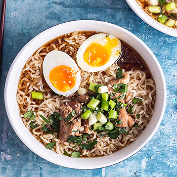

Pork Ramen
Pork ramen is also called Hakata ramen. Hakata ramen is mainly used Made in Fukuoka City, Fukuoka Prefecture. Pork bone soup and straight Japanese ramen based on fine noodles.

Pork ramen is also called Hakata ramen. Hakata ramen is mainly used Made in Fukuoka City, Fukuoka Prefecture. Pork bone soup and straight Japanese ramen based on fine noodles.
Tempura wraps ingredients such as seafood and vegetables in clothing mainly made of flour, It is a Japanese dish that is fried in oil and cooked. Edo (Tokyo) is a local dish of Edo (Tokyo) In modern times, tempura has spread throughout Japan.
Miso soup is one of the soups in Japanese cuisine. To the juice of seasoned dashi with miso, vegetables, tofu, salmon and seafood This is a soup-like dish with fruits. It is also called “Taste of Goji”.
Curry and rice is a dish that is eaten over rice with curry. Born in the UK based on Indian cuisine, uniquely in Japan It is a changed dish. In recent years, the original style has evolved unique to Japan There are many curry and rice.
Okonomiyaki is made with flour and cabbage This is a type of teppanyaki used. Favor such as vegetables, meat, seafood using dough made of flour dissolved in water using materials, baking on iron plate, sauce, mayonnaise, blue paste etc. Eat with seasoning. Differences are seen in how to bake and ingredients, Various styles such as “Kansai style okonomiyaki” and “Hiroshima style okonomiyaki” Okonomiyaki is present.